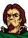
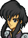

ワールドマップ
王都バーハラでの激しい戦いは
有力諸公のほとんどを死においやり、The fierce battle at the royal capital, Belhalla, claimed the lives of most of the powerful nobles,
アルヴィス卿は自らが計画した通りに
王国の全権を手に入れることとなった。and Lord Arvis, exactly as he had planned, seized total control of the kingdom.
彼は敵対するシレジア、レンスターの
両王国を滅亡させて大陸を統一し、He destroyed the two rival kingdoms of Silesse and Leonster, unifying the continent,
国民の圧倒的な支持によってand with the overwhelming support of the people
グランベル帝国初代皇帝と
なったのである。he became the first emperor of the Grannvale Empire.
そしてバーハラの戦いから
十七年の時が流れた。Seventeen years passed since the battle of Belhalla.
かつてはアルヴィス皇帝を
熱狂して迎えた人々も、The people who once hailed Emperor Arvis with such enthusiasm
今ではその圧政にあえぎ苦しみ、now groaned and suffered under his tyranny,
また、帝国の支配下にある
地方の国々では、and in the outlying nations under the Empire's rule,
人々はまるで奴隷のような生活を
強いられていた。people were forced to live like slaves.
ここイザークでも、
人々の苦しさは限界に達していた。Here in Isaac too, the people's suffering had reached its limit.
イザーク王ダナンは
父親であるランゴバルト公爵ににて、King Danan of Isaac, like his father Duke Langobalt,
残虐な男であった。was a cruel man.
彼はイザークの民を奴隷身分に落としHe reduced the people of Isaac to slavery,
みずからはリボーの王宮で
快楽におぼれながらも、and while he himself indulged in pleasure at the palace in Ribot,
次男ヨハンをイザーク城に、
三男ヨハルヴァをソファラ城に、he placed his second son Johan at Isaac Castle, his third son Johalva at Sophara Castle,
また辺境のガネーシャ城には
腹心であるハロルド将軍をおいて、and at the remote Ganeishire Castle he placed his trusted General Harold,
住民をきびしく弾圧していたのである。ruling the people with a heavy hand.
だが、イザークの民には希望があった。But the people of Isaac still had hope.
北方の隠れ里「ティルナノグ」に
シャナン王子の解放軍が結成され、In the hidden village of Tirnanog to the north, Prince Shanan's Liberation Army had formed,
日に日に力をつけてきた。and day by day it grew stronger.
そして、彼ら若き戦士たちの中に
イザークの人々が光の公子とよび、And among those young warriors was a boy the people of Isaac called the Prince of Light,
また、グランベルの皇子と敬う
一人の少年の姿があった。and revered as the prince of Grannvale.
解放軍の若き盟主、
その名を、セリスといった。The young leader of the Liberation Army; his name was Celice.
オープニング(ガネーシャ)

ハロルドよ、
反乱軍どもの捜さくはどうなっておる？(Danan): Harold, how goes the search for the rebels?
いつまで奴らを
野放しにしておくつもりだ！(Danan): How much longer do you intend to let them run wild!
シャナン王子の反乱軍は
年々大きくなって
ことあるごとにわしらのじゃまをしおる(Danan): Prince Shanan's rebel army grows bigger every year, and gets in our way at every turn.
その上、奴らのもとには、
反逆者シグルドの子まで
かくまわれておるというではないか(Danan): And on top of that, I hear they're even harboring the child of that traitor Sigurd.
これではわしは、
イザーク王としての立場がない(Danan): This leaves me, as King of Isaac, with no standing at all.
皇帝陛下に何と言って
おわびすればよいのだ！(Danan): What am I to say to His Majesty the Emperor to apologize for this!

ははっ、申し訳ございません、ダナン様
しかし、ご安心下さい(Papillon): Hah, my deepest apologies, Lord Danan. But please be at ease.
反乱軍のアジトはすでに突きとめ
討伐隊も出撃させております(Papillon): We've already located the rebels' hideout, and a punitive force has already been sent out.
奴らは、もはやふくろのネズミ
一人残らず討ち取ってごらんにいれます(Papillon): They're nothing more than rats in a sack now. We'll strike down every last one.
うむっ、そうか・・・
しかし言っておくが、油断するな(Danan): Hmph, is that so... But let me say this: do not grow careless.
ガキどもは良いが、
問題はオイフェとシャナンだ(Danan): The brats are fine, but the real problem is Oifey and Shanan.
あの二人だけは、
侮ると手ひどい目にあうぞ(Danan): Underestimate those two alone, and you'll pay dearly for it.
はっ、承知しております
しかし密かに調べたところ、(Papillon): Yes, I'm well aware. But as it happens, from what we've quietly looked into,
オイフェもシャナンも、
ティルナノグのアジトにはおりません
どうやら外出している様です(Papillon): neither Oifey nor Shanan is at the Tirnanog hideout. It seems they're both out.
なに？ それはまことか！
ならばグズグズするな
すぐに攻撃の命令を出せ！(Danan): What? Is that true! Then don't dawdle. Give the order to attack at once!
イザークの住民どもは
奴らを解放軍とよび英雄扱いだ(Danan): The people of Isaac call them the Liberation Army and treat them like heroes.
見せしめのためにも手加減はいらぬ
殺せ！ 皆殺しにせよ！！(Danan): There's no need for mercy — this will serve as an example. Kill them! Kill them all!!
わしはリボーに帰るが、
良い知らせを待っておるぞ(Danan): I'll be heading back to Ribot. I expect good news waiting for me.
(ダナンがリボーに戻る)
(ハロルド率いるガネーシャ軍が登場)
オープニング(ティルナノグ)
(スカサハ(ロドルバン)がティルナノグにやってくる)

セリス様、大変です！
この隠れアジトが
敵に知られてしまったようです(Scathach): Lord Celice, this is terrible! It seems the enemy has found this hideout!
ガネーシャから
討伐隊が出たとの知らせが！！(Scathach): Word has come that a punitive force has set out from Ganeishire!!

スカサハ、なにをあわてているのよ
このアジトも
いずれ知れるのは分かっていたこと、(Lakche): Scathach, what are you panicking for? We always knew this hideout would be found eventually.
向こうから来てくれるなら
手間がはぶけていいじゃない(Lakche): If they're coming to us, that just saves us the trouble.
迎え討って、
ついでにガネーシャまで進撃しましょう(Lakche): Let's meet them head on, and while we're at it, push on to Ganeishire.
ラクチェ、バカを言うな(Scathach): Lakche, don't talk nonsense.
シャナン王子は
イード神殿に行かれたままだし、
オイフェさんたちもまだ帰ってこない(Scathach): Prince Shanan has gone off to the Temple of Yied, and Oifey and the others still aren't back either.
おれ達だけで
どうして戦えると言うんだ(Scathach): How are we supposed to fight with just the two of us?
あら、スカサハは恐いの
わたしは平気よ
それにチャンスじゃない(Lakche): Oh my, is Scathach scared? I'm not worried at all. Besides, isn't this a chance?
王子はわたしたちを子供扱いして、
なかなか実戦に加えてくれなかったけど
もう十分に修行は積んだわ(Lakche): The prince always treated us like children and wouldn't let us into real battle, but I've trained more than enough by now.
だけどラクチェ・・・(Scathach): But, Lakche...
わたし・・・もう逃げるのはいやなの
奴らはケダモノよ！
わたしのお友達もたくさん殺されたわ(Lakche): I... I don't want to keep running away anymore. They're beasts! So many of my friends have been killed.
帝国兵は
逃げまどう娘達を追いかけて次々と・・・(Lakche): Imperial soldiers chasing down girls who try to flee, one after another...
あのとき、
シャナン王子が助けに来てくれなければ
わたしだって、死んでいた(Lakche): Back then, if Prince Shanan hadn't come to save me, I'd be dead too.
・・・あの子たちの悲しみを、
わたし・・・忘れるもんか！(Lakche): ...I will never forget those girls' sorrow!
ラクチェ・・・
おまえが悔しいのはわかるさ・・・
だけどな・・・(Scathach): Lakche... I know how frustrated you are... but still...

スカサハは、
私のことを心配してるんだよ(Celice): Scathach is worried about me.
たぶん、
シャナンからきつく言われたんだろう(Celice): He was probably told sternly by Shanan to hold back.
そうでもなければ
彼が一番さきに飛び出してるはずだ(Celice): Otherwise he'd be the first one charging out there.
スカサハだって
戦いたくてうずうずしてるもの(Celice): Scathach is dying to fight too.
あ、・・・それは・・・そうでした・・・
確かに、セリス様まで
巻き込むわけには・・・(Lakche): Ah, ...that's... true, I suppose... Indeed, we can't go dragging Lord Celice into this too...
あれ、ラクチェまで、そんなことを？
私だってもう子供じゃない
きみたちと一緒に戦えるさ(Celice): What, Lakche, you too? I'm not a child anymore either. I can fight alongside all of you.
それにこのティルナノグは
大事なふるさとだし、(Celice): And besides, this Tirnanog is a precious home to me,
世話になった人達をおいて
逃げるわけにはいかないよ(Celice): I can't just abandon the people who took care of me and run.
しかし、それでは・・・(Scathach): But even so...
グズグズしていては間に合わない
ラナ、街の人たちをたのむよ
私たちは西のくぼちで敵をむかえ討つ(Celice): There's no time to waste — Lana, I'm counting on you to look after the townspeople. We'll go meet the enemy at the western hollow.

セリス様、わたしもまいります！(Nanna): Lord Celice, I'm coming too!
だめだ、
きみはシスターだし、戦いには向かない(Celice): No, you're a sister, you're not suited for battle.
シスターだって戦えます！
わたしもきもちはラクチェと同じ、(Nanna): Even a sister can fight! I feel the same way as Lakche,
帝国兵の残虐さは
日をおうごとにひどくなって(Nanna): the Empire's soldiers grow crueler by the day,
とくに女や子供は、
もう生きてはいけない
でも、このまま滅びるのはいや(Nanna): and women and children especially can't go on living like this. I don't want us to be destroyed like this.
わたしにはわたしの、
戦い方があります！(Nanna): I have my own way of fighting!
そうか・・・すまない、ラナ
確かに、きみの言うとおりだ
この戦いはみんなの戦いだものね(Celice): I see... I'm sorry, Nanna. You're right. This is everyone's fight.
わかった、一緒に行こう
結果はわからないけど、(Celice): Alright, let's go together. I don't know how it'll turn out, but
今、私たちでできることを
せいいっぱいやってみよう(Celice): let's do everything we can right now.
はい、セリス様！
でも・・・ごめんなさい、生意気いって(Nanna): Yes, Lord Celice! But... I'm sorry for speaking out of turn.
ははは・・・いいさ
じゃ、スカサハ、ラクチェ、ラナ、
いこう！(Celice): Hahaha... it's fine. Now then, Scathach, Lakche, Nanna, let's go!
3ターン目のセリス軍フェーズ
(オイフェ、デルムッド(トリスタン)、レスター(ディムナ)が登場)

くっ・・・しまった
すでに戦いは始まっているのか(Oifey): Damn it... I'm too late, the battle's already begun.

われらが
諸国の状況を見て回っている間に、
ティルナノグの情報がもれたようですね(Lester): While we were going around checking on the other countries' conditions, it seems word of Tirnanog got out.
みんな無事だといいのですが(Lester): I hope everyone's alright.

レスター、
なにをひと事のように言ってる(Delmud): Lester, don't talk about it like it's none of your concern.
おまえの妹のラナだって、
戦いに巻き込まれているかも
知れないのだぞ(Delmud): Your sister Nanna might be caught up in the fighting too, you know.
オイフェ様、急ぎましょう
セリス様が心配です！(Delmud): Lord Oifey, let's hurry — I'm worried about Lord Celice!
そうだな、デルムッド、レスター、
戦場まで一気に駆け抜けるぞ！(Oifey): You're right, Delmud, Lester — let's race to the battlefield at full speed!
会話(スカサハ→ラクチェ)
ラクチェ、大丈夫か？(Scathach): Lakche, are you alright?
うん、なんとかね・・・(Lakche): Yeah, somehow or other...
あまり無理はするなよ
おまえは向こう見ずだからな(Scathach): Don't push yourself too hard. You're always so reckless.
わかっているわ
もう子供じゃないんだから(Lakche): I know that already. I'm not a child anymore.
シャナン王子はな、
おまえの気の強さは
母親にそっくりだと言っておられたぞ(Scathach): Prince Shanan said your fiery temper is just like your mother's.
アイラ母様の事ね・・・
でも私はぜんぜんおぼえていない
スカサハは？(Lakche): You mean Mother Ayra... but I don't remember her at all. What about you, Scathach?
俺だっておぼえてないさ(Scathach): I don't remember her either.
だっておまえと俺は双子なんだし、
俺達、まだふたつにも
なってなかったんだぞ(Scathach): After all, you and I are twins, and we hadn't even turned two yet.
オイフェさんに連れられて
イザークに逃れてきたけど、
母さんは結局帰ってこなかった(Scathach): Oifey brought us to safety in Isaac, but Mother never came back.
やっぱり、
バーハラの戦いで死んだのかな・・・(Scathach): I suppose she must have died in the battle of Belhalla after all...
スカサハ！
それは言わない約束でしょう！
母様は生きているわ！！(Lakche): Scathach! You promised never to say that! Mother is alive!!
そんな事は二度と言わないで！(Lakche): Don't ever say such a thing again!
・・・すまんラクチェ・・・
そうだった・・・ごめん(Scathach): ...I'm sorry, Lakche... you're right... sorry.
(ラクチェ LUK+1)
会話(ロドルバン→ラドネイ)

ラドネイ、大丈夫か？(Rodolvan): Radney, are you alright?

ええ、なんとかね・・・(Radney): Yeah, somehow or other...
あまり無理はするなよ
おまえは向こう見ずだからな(Rodolvan): Don't push yourself too hard. You're always so reckless.
わかっているわよ
もう子供じゃないんだから(Radney): I know that already. I'm not a child anymore.
だけど不思議だよな
俺にはヨハンやヨハルヴァの
気がしれないよ(Rodolvan): But it's strange, isn't it. I can't understand what Johan or Johalva are thinking.
あたしは迷惑してるの
男なんて大きらい！
ムシズがはしるわ(Radney): I find it so troublesome. I hate men! It makes my skin crawl.
おまえの男ぎらいは
帝国兵が原因なんだろう
でもあんなヤツらばかりが男じゃないぜ(Rodolvan): Your hatred of men is because of those imperial soldiers, isn't it. But not all men are like that.
うん、それはわかってる
でも今はまだダメね・・・
そばにいるだけで、きもちが悪くなるの(Radney): Yes, I know that. But I still can't accept it... just being near them makes me feel sick.
男なら誰でもか？(Rodolvan): Any man at all?
もちろんセリス様やロドルバンは別よ(Radney): Of course Lord Celice and Rodolvan are different.
ふっ、そしてシャナン様か(Rodolvan): Heh, and Lord Shanan too, I suppose.
ロ、ロドルバン！！(Radney): Ro-, Rodolvan!!
(ラドネイ LUK+1)
会話(オイフェ→セリス)
セリス様、ご無事でしたか！(Oifey): Lord Celice, I'm glad to see you safe!
オイフェ、戻ってくれたんだね
各国の様子はどうだった？(Celice): Oifey, you've come back. How were things in the other countries?
はい、状況はますますひどくなっています
世界中の人々が帝国の圧政にあえぎ
各地で反乱がおきています(Oifey): Yes, the situation is only getting worse. People all over the world are groaning under the Empire's tyranny, and uprisings are breaking out everywhere.
やはりそうか・・・、
帝国の圧政は
イザークだけではなかったんだね(Celice): I thought as much... so it's not only Isaac suffering under the Empire's tyranny.
オイフェ、彼らを救えないだろうか？(Celice): Oifey, isn't there any way we could save them?
残念ですが今の私達には、
帝国と戦えるほどの力はありません(Oifey): I'm afraid that right now we don't have anywhere near enough strength to fight the Empire.
でも、イザークの解放戦争は
始まってしまった
もう後戻りはできない・・・(Celice): But Isaac's war of liberation has already begun. There's no turning back now...
ええ、
セリス様の所在が明らかになった以上
もう隠れているわけにはゆきません(Oifey): Yes, now that Lord Celice's whereabouts are known, we can no longer stay hidden.
少々無謀な戦いではありますが、
やむをえぬでしょう・・・(Oifey): It's a rather reckless fight, but it seems there's no helping it now...
かってに戦いを始めてしまって
すまないと思っている(Celice): I feel bad for starting this fight on my own.
でもイザークの人々は、もうこれ以上
ダナンの圧政にはたえられないんだ
オイフェ、わかってほしい・・・(Celice): But the people of Isaac can't endure Danan's tyranny any longer. Oifey, please understand...
ええ、セリス様
このうえは一刻も早く
王都のリボーまで攻め上りましょう(Oifey): Yes, Lord Celice. In that case, we should press on to the capital, Ribot, as soon as possible.
グズグズしていては
帝国の援軍が来るかも知れません！(Oifey): If we dawdle, the Empire's reinforcements might arrive!
会話(レスター→ラナ)
ラナ！？
おまえまで戦いに加わっているのか？(Lester): Nanna!? You've joined the fighting too?
ええ、レスター兄様
セリス様が心配だから・・・(Nanna): Yes, brother Lester. Because I was worried about Lord Celice...
そうか、やっぱりな・・・(Lester): I see, I thought as much...
でも気を付けてくれよ
おまえにもしもの事でもあれば
母上が悲しまれる(Lester): But please be careful. If anything happened to you, Mother would be heartbroken.
ええ、でもね、にいさま
エーディン母さまは言われました(Nanna): Yes, but you know, brother, Mother Ethlyn told us
私たちは
イザークの人々に恩があるから、
できることはしましょうって(Nanna): that since we owe the people of Isaac so much, we should do whatever we can for them.
ああ、この国の人達が
助けてくれなかったら
俺たちは生きてこれなかった(Lester): Yes, if this country's people hadn't helped us, we wouldn't have survived.
・・・それで、母上は？(Lester): ...so, how is Mother?
ティルナノグの修道院で
働いておられます(Nanna): She's working at the convent in Tirnanog.
そうか・・・ラナ、母上のためにも
そして、まだ見ぬ父上のためにも
俺たちはがんばろう(Lester): I see... Nanna, for Mother's sake, and for the sake of the father we've never met, let's do our best.
そしていつの日かきっと
母上のふるさと、ユングヴィに帰るんだ(Lester): And someday, surely, we'll return to Mother's homeland, Jungby.
はい、レスター兄様(Nanna): Yes, brother Lester.
(ラナ LUK+1)
会話(ディムナ→マナ)
マナ！？
おまえまで戦いに加わっているのか？(Dimna): Mana!? You've joined the fighting too?

そうよ、ディムナ兄さん
だってセリス様が心配だもの(Mana): That's right, brother Dimna. Because I'm worried about Lord Celice.
ふーん、やっぱりな・・・(Dimna): Hmph, I thought as much...
な、なによ・・・(Mana): Wh-, what do you mean...
うん・・・
まあ、いいさ、でも深入りはするな(Dimna): Well... fine, I suppose, but don't get in over your head.
セリス様はグランベル王家の血を引く
高貴な方なんだ(Dimna): Lord Celice carries the noble blood of the Grannvale royal family.
本当なら俺達のような平民は
近づくことさえできない
泣くことになるのはおまえだぞ(Dimna): Commoners like us really shouldn't even be allowed near him — it'll be you who ends up crying over it.
そんな・・・
兄さんは誤解しているわ(Mana): That's not... brother, you've got it all wrong.
わたしはただ、
セリス様を守ってあげたいだけなのに(Mana): I just want to protect Lord Celice, that's all.
そうか・・・それならいいんだ
ごめんよマナ、
俺はおまえが心配だから・・・(Dimna): Is that so... then that's fine. Sorry, Mana, I just worry about you, that's all...
うん、わかってる・・・
ありがとう、ディムナ兄さん・・・(Mana): Yeah, I know... thank you, brother Dimna...
(マナ LUK+1)
会話(セリス軍ユニット→中立ソファラ兵)
ヨハルヴァ様も、もの好きだよな
あんな気の強い女のどこがいいのかねぇ(Soldier): Lord Johalva really has strange tastes, doesn't he. What does he see in such a hot-tempered woman anyway.
オレだったらもっとこう・・・
な、なにを言わせるんだ！
・・・・・・(Soldier): If it were me, I'd rather— Wha, what are you trying to make me say!? ......
会話(セリス軍ユニット→中立イザーク兵)
はぁ、ヨハン様にもまいるよな
女にはからきし弱いのに
オレ達にはめちゃくちゃきびしいんだぜ(Soldier): Hah, Lord Johan's a handful too. He's completely weak when it comes to women, but brutally strict with us.

何か言ったか？(Johan): Did you say something?
い、いえ！
なんでもございませんです！ はい(Soldier): N-, no! It was nothing at all, sir! Yessir!
ハロルド初戦時
くっ・・・
たかが反乱軍ごとき！(Papillon): Damn it... mere rebels, of all things!
ハロルド撃破時
ぐわ・・・なぜだ・・・・・・
こんな寄せ集めの兵に
敗れるのか・・・！？(Papillon): Guh, ...why... ...how could I lose to such a ragtag band of soldiers...!?
ガネーシャ城制圧時
これがガネーシャ・・・
ずいぶんと荒らされているな・・・(Celice): So this is Ganeishire... it's been thoroughly ravaged...
セリスか、久しぶりだな(Levin (Strategist)): Celice, it's been a while.
え？ ・・・あっ、レヴィン！！
・・・いや、
・・・シレジアのレヴィン王・・・(Celice): Huh? ...oh, ...Levin!! ...no, ...King Levin of Silesse...
昔のように、レヴィンでいいさ
シレジアはあのバーハラの戦いの後、
帝国に占領された(Levin (Strategist)): Just call me Levin, like the old days. After the battle of Belhalla, Silesse was occupied by the Empire.
私は今も
こうして生き恥をさらしているが、(Levin (Strategist)): I'm still disgracing myself by living on like this, but
シレジアは母上とともに
誇りを持ったまま滅んだのだ(Levin (Strategist)): Silesse itself perished with its pride intact, together with my mother.
私は今も昔も、間抜けな吟遊詩人
オイフェはどう言ったか知らないが、
まちがっても私を王などと呼ぶな！(Levin (Strategist)): Now as before, I'm nothing but a foolish wandering minstrel. I don't know what Oifey might have told you, but whatever you do, don't call me a king.
レヴィン・・・ごめんなさい・・・(Celice): Levin... I'm sorry...
ははは、これもシャレさ、気にするな
そんなことより、いよいよ始まったな
長い間、待っていたかいがあったぞ(Levin (Strategist)): Hahaha, that was just a joke, don't worry about it. More importantly, so it's finally begun. It was worth the long wait.
反帝国の兵を挙げるのに
イザークほど都合の良い国はない(Levin (Strategist)): There's no country better suited for raising an army against the Empire than Isaac.
ええ、この国の人達は勇気があるし、
帝国を心から憎んでいます(Celice): Yes, the people of this country have courage, and they hate the Empire with all their hearts.
本当はシャナン王子がいてくれれば
もっと楽に戦えるのだけど(Celice): Though honestly, things would be much easier if Prince Shanan were here.
シャナンはイードの神殿に行ったのか？(Levin (Strategist)): Did Shanan go to the Temple of Yied?
ええ、
イザーク王家の家宝、神剣バルムンクが
イード神殿にあるという情報があって・・・(Celice): Yes, there was information that the Isaac royal family's treasure, the holy sword Balmung, is at the Temple of Yied...
でも、あそこは
邪悪な暗黒司祭が支配しているというし、
みんな心配しています(Celice): But apparently that place is ruled by a wicked dark priest, and everyone's worried about him.
まあ、彼のことだ、心配はいらんさ
それよりもセリス、頼みがある(Levin (Strategist)): Well, knowing him, there's no need to worry. More importantly, Celice, I have a favor to ask.
え？ なんでしょう
私にできることなら
喜んでお受けしますが(Celice): Oh? What is it? If it's something I can do, I'd be glad to help.
ユリア、来なさい
この子は、幼い頃に
バーハラの都で倒れているのを私が助け(Levin (Strategist)): Julia, come here. This child — I rescued her as a small girl, collapsed in the capital of Belhalla,
今まではシレジアの辺境で
保護してきたのだが、(Levin (Strategist)): and I've been keeping her hidden on the frontier of Silesse until now,
そこもいよいよ危なくなってきたので
やむなく連れてきた(Levin (Strategist)): but even that place has finally become dangerous, so I had no choice but to bring her along.
だが、私はこれから
レンスターまで行かねばならん
少々足手まといなんだ(Levin (Strategist)): But I have to go on to Leonster from here, and she'd be a bit of a burden.
セリス、
悪いがしばらく
この子を預かってくれないか(Levin (Strategist)): Celice, I'm sorry to ask, but could you look after her for a while?
この子はかわいそうな娘だ
なにかひどいショックを受けたのか、(Levin (Strategist)): This girl has had a hard life. She seems to have suffered some terrible shock,
私が助けたときには、
何一つ記憶がなかった
いまも、まだ・・・(Levin (Strategist)): because when I rescued her, she didn't have a single memory left. Even now, she still doesn't...
！ ・・・そんなことが・・・
わかりました、私にお任せ下さい(Celice): ! ...I had no idea... understood, leave her to me.
でも、
できるだけ早く迎えに来て下さいね
ユリアも・・・心細いでしょうから(Celice): But please come back for her as soon as you can. Julia must be feeling anxious too...
ああ、わかっている
おまえたちがイザーク全土を
制圧する頃には私も戻るさ(Levin (Strategist)): Ah, I know. By the time you've taken all of Isaac, I'll be back too.
じゃ、がんばれよ セリス(Levin (Strategist)): Well then, good luck, Celice.
レヴィンも、気を付けて！(Celice): Take care too, Levin!
(レヴィン撤退)
ユリア、
心細いだろうけど、心配はいらないよ(Celice): Julia, I know it must be unsettling, but there's nothing to worry about.
レヴィンが戻るまで、
ぼくがきみを守るから・・・って、(Celice): Until Levin comes back, I'll protect you... though, honestly,
ほんとは
まだそんなに強くないんだけどね(Celice): I'm not really all that strong yet.
でも、ぼくはがんばって強くなる
みんなを守れるように、(Celice): But I'll do my best to grow stronger, strong enough to protect everyone,
そして、
帝国の圧政からみんなを助けるために、
ぼくは父上のように、強くなるんだ・・・(Celice): and to save everyone from the Empire's tyranny — I'll become strong, just like my father...

セリス様・・・・・・・(Julia): Lord Celice.........
(「ガネーシャ城 をせいあつした！」)
(リボー軍フェーズ)
(リボー)
ガネーシャが反乱軍の手におちただと？
ハロルドめ、ぬかりおって！(Danan): Ganeishire has fallen into the rebels' hands, you say? Harold, you fool!
ワシの息子たちは何をしておるのだ！
さっさと反乱軍を討てと伝えろ！(Danan): What are my sons doing! Tell them to crush the rebels at once!
(シュミット率いるリボー軍が登場)
(ソファラ東)

親父が攻撃命令を出してきただと？
ラクチェがいる軍と戦えってのか？
くそっ、どうすればいいんだよぉ(Johalva): Father's giving an attack order, huh? Fight the army with Lakche in it? Damn it, what am I supposed to do...
(イザーク北)
ガネーシャを攻撃せよ、だと？
やれやれ、父上のご命令か(Johan): Attack Ganeishire, is it? Good grief, father's orders...
しかし、
私にはラクチェと戦うことなどできん
ああっ、いったいどうすれば・・・(Johan): But... I could never fight Lakche. Ahh, what on earth should I do...
(セリス軍フェーズ)
(フィー(フェミナ)が登場)

ふーっ、ごめんねマーニャ
重たかったでしょ(Fee): Whew, sorry, Mana. Was I heavy?

ふーん、
そのペガサスはマーニャっていうのか(Arthur): Hmm, so that pegasus is called Mana.
アーサー、いいかげんにしてよ
もう少し、もう少しって、
結局イザークまできたじゃない！(Fee): Arthur, would you quit it already! "Just a little further, just a little further" you kept saying, and we ended up all the way out here in Isaac!
無理を言って悪かったな、フィー
もう少しなんだけど
まあ、いいや、あとは歩いてゆくさ(Arthur): Sorry for the imposition, Fee. Just a bit further — well, never mind, I'll walk the rest of the way.
いったいどこに行くつもりなのよ(Fee): Where on earth are you even trying to go?
アルスター(Arthur): Alster.
ア、アルスター！？
あんた、バカじゃない(Fee): Al-, Alster!? Are you out of your mind.
アルスターっていったら
海をこえてさらに南、(Fee): Alster, if I remember right, is way to the south, across the sea,
ここからいったい
どれだけあると思っているのよ
歩いていけるわけないじゃない！(Fee): do you have any idea how far that is from here... there's no way you can walk it!
いいさ、別に急ぐ旅でもないし(Arthur): It's fine, it's not like I'm in any particular hurry.
アルスターにいったい何があるのよ(Fee): So what's even in Alster?
そこに、
幼いときに生き別れた妹がいるらしい(Arthur): There's a little sister there, apparently, who I was separated from when we were small.
おれは小さいときに母と妹を奪われて
シレジアの片いなかで、一人ぼっちで
暮らしてきたけど(Arthur): When I was little, my mother and sister were taken from me, and I grew up all alone in some corner of Silesse,
そんな話をきいちゃ、やっぱりなぁ・・・
会いたいよ・・・(Arthur): but hearing a story like that, well, I just... I want to see her...
ふーん、そうなんだ
わかるよ、そのきもち
あたしだって、お兄ちゃんに会いたいもの(Fee): Huh, is that so. I understand, that feeling. I want to see my brother too, you know.
きみも生き別れ？(Arthur): You were separated too?
ううん、ずっとシレジアで一緒だったよ
でも、お兄ちゃん、旅に出た
お父さんを捜すんだって言ってさ(Fee): No, we were together in Silesse the whole time. But my brother left on a journey, saying he was going to look for our father.
父さんを？(Arthur): Your father?
あたし達のお父さんね、行方不明なの
お母さん、ずっと待ってたけど
帰ってこなかった(Fee): Our father, you see, has gone missing. Mother waited and waited, but he never came back.
それで、お母さんは？(Arthur): And what happened to your mother?
しんじゃった、病気で・・・(Fee): She died, of illness...
そうか・・・ごめん、
へんなこときいちゃったな(Arthur): I see... sorry, that was a strange thing to ask.
いいの、
あなた、へんなヤツだと思ってたけど、
そう悪いひとでもないみたいね(Fee): It's fine. I used to think you were a strange one, but you're not such a bad person after all.
ははは、これはどうも
見直してくれたってわけかい(Arthur): Hahaha, well, thank you very much. So you've reconsidered your opinion of me, have you.
まあね
それで、ホントにこれからどうするの？(Fee): I suppose so. So, what are you really going to do from here?
うん、そうだなぁ・・・
だけど、そういうきみは？(Arthur): Hmm, well, I don't know... but what about you?
あたしは、
イザークの解放軍に参加するの(Fee): I'm going to join Isaac's Liberation Army.
小さい頃ね、お母さんからきいた
聖騎士シグルドと勇者達の物語
ずっとあこがれてたの(Fee): When I was little, my mother told me the story of the holy knight Sigurd and the brave warriors — I always admired it.
そのシグルド様のご子息がね、
イザークで旗あげをしたのよ(Fee): And now that very Sigurd's own son has risen up here in Isaac.
これはあたしも
がんばんなくっちゃ、と思ってさ、
あわててシレジアを出てきたわけ(Fee): I figured I'd better do my part too, so I rushed out of Silesse in a hurry.
へぇー、面白そうだな
よし、俺もしばらく手伝うよ
乗せてもらった礼もあるしな(Arthur): Heh, sounds interesting. Alright, I'll lend a hand for a while too — I owe you for the ride, after all.
オッケー、そうこなくっちゃ、
がんばりましょうね、あいぼう！(Fee): Okay, now you're talking! Let's do our best, partner!
ははは、元気なヤツだな(Arthur): Hahaha, you're a lively one.
ヨハンまたはヨハルヴァが中立になったとき
何をしておるのだ！
あのバカ息子どもめ、
戦い方も知らんのか！(Danan): What are they doing! Those useless sons of mine, don't they even know how to fight!
シュミット、お前が行け、
反乱軍にうばわれた城を取り戻すのだ！(Danan): Schmidt, you go — take back the castle the rebels stole from us!

はい、ダナン様、おまかせください(Slayder): Yes, Lord Danan, leave it to me.
会話(ラナ(マナ)→ユリア)
こんにちは、ユリア
レヴィン様がいなくて
さみしいでしょう？(Nanna): Hello, Julia. You must be lonely without Lord Levin around.
あなたはラナね
いいえ、わたしは大丈夫です
さみしくなんてありません(Julia): You're Nanna, aren't you. No, I'm fine. I'm not lonely at all.
セリス様がね、
あなたの事をとても心配されていました(Nanna): Lord Celice has been very worried about you, you know.
なにか困ったことがあったら
わたしに言ってね(Nanna): If anything's troubling you, just tell me.
ええ、ありがとう・・・(Julia): Alright, thank you...
それと、これをあなたに(Nanna): And here, this is for you.
これは、リライブの杖ですか(Julia): Is this a Revive staff?
ええ、あなたなら使えるでしょう？(Nanna): Yes, I'm sure you can use it, can't you?
わたしにくださるの？
・・・ありがとう、ラナ(Julia): You're giving this to me? ...thank you, Nanna.
これでわたしも
みんなの役にたてます(Julia): Now I can be of use to everyone too.
ユリア、わたしたち、
力を合わせてがんばりましょうね(Nanna): Julia, let's work hard together, and do our best!
(「リライブの杖 をてにいれた！」)
会話(ラクチェ(ラドネイ)→ヨハン)
ああ、ラクチェ・・・わが愛しの人よ
ついに運命の日は来たり・・・(Johan): Ah, Lakche... my beloved... the day of destiny has finally come...
ヨハン？ 何を言っているの？
なにか悪い物でもたべたのか？(Lakche): Johan? What are you talking about? Did you eat something bad?
ラクチェ・・・
きみの言葉は小鳥のさえずり
きみのひとみは、星のまたたき(Johan): Lakche... your words are a little bird's song, your eyes are the twinkling of the stars.
ああ、もはや、
きみなしでは生きてはいけない・・・(Johan): Ah, I can no longer live without you any longer...
やめろ！、きもちが悪い！
ここは戦場なのだぞ
とても正気とは思えない(Lakche): Stop it, it's disgusting! This is a battlefield, you know — you can't possibly be in your right mind.
私の心が、
いつわりではない証拠をみせる
愛は時に、人を狂わせるものなのだ(Johan): I'll show you proof that my heart speaks no falsehood. Love can drive a man mad, at times.
全軍に告ぐ、
これより我が軍は、解放軍に協力する！(Johan): Hear me, all my troops — from this moment, our army sides with the Liberation Army!
今日から我らは、愛と正義と、
ラクチェのために戦うのだ！！(Johan): From today, we fight for love, for justice, and for Lakche!!
(ソファラ東)
ちくしょう、ヨハン兄貴め！
抜け駆けして
ラクチェの味方につきやがった(Johalva): Damn it, brother Johan! Sneaking off ahead of me and siding with Lakche.
こうなったら、戦ってやるぜ！
全軍、攻撃にうつれ！(Johalva): Fine then, I'll fight! All troops, to the attack!
会話(ラクチェ(ラドネイ)→ヨハルヴァ)
ラクチェじゃねえか！
俺に会いたくなって、
ここまで来たのか？(Johalva): Well if it isn't Lakche! Did you come all this way just because you wanted to see me?
ふふっ、ヨハルヴァ・・・相変わらずね
あなたは荒くれだけど、
確かに悪い人じゃない(Lakche): Heh, Johalva... same as ever, I see. You may be rough around the edges, but you really aren't a bad person.
少なくとも、
女、子供に手出しはしなかったもの(Lakche): At the very least, you never laid a hand on women or children.
わたしだって、
できることなら戦いたくはないわ(Lakche): If I could help it, I wouldn't want to fight either, you know.
おれは、
兄貴達みたいにクールじゃねえよ
力でごり押しするのは好きじゃねえんだ(Johalva): I'm not cool and composed like my brothers, you know. I'm not the type to force things through with brute strength.
それに、ロプト教団のやり方には、
もうがまんできねえ(Johalva): And besides, I can't stand the Loptr cult's ways anymore.
国じゃ、罪もない子供達を
いけにえにしているって言うし、(Johalva): I hear they're sacrificing innocent children back home,
それにモンク一つ言えねえオヤジにも
愛想が尽きた(Johalva): and I'm sick and tired of my old man too, who can't even say a word against it.
ラクチェが望むなら、
おれの部隊ごとおまえにくれてやらあ(Johalva): If Lakche wants it, I'll hand my whole unit over to you.
え！ ・・・本気なの？
ヨハルヴァ、あんたって人は・・・(Lakche): Wha! ...are you serious? Johalva, you really are something...
ごめんなさい
いままで少し誤解してたみたい(Lakche): I'm sorry, it seems I've misjudged you a little, all this time.
いいさ、確かに酷いこともやってきた
その罪滅ぼしもあるし、やってやるぜ(Johalva): It's fine. I really have done some awful things, so call this making up for it, I'll do it.
おおしっ、今日からおれらは解放軍だ！
てめえら、愛と正義のために戦おうぜ！！(Johalva): Alright then, from today we're the Liberation Army! You lot, fight for love and justice!!
(イザーク北)
ヨハルヴァが解放軍についただと？
くっ・・・ヨハルヴァめ、
抜け駆けしおって！(Johan): Johalva has sided with the Liberation Army, you say? Damn... Johalva, sneaking ahead of me like that!
ええい、全軍、攻撃開始だ！(Johan): Fine then, all troops, begin the attack!
会話(アーサー(アミッド)→セリス)
セリス様、初めまして(Arthur): Lord Celice, nice to meet you.
きみは・・・？(Celice): You are...?
私はアーサー、
シレジアから来ました(Arthur): I'm Arthur. I've come from Silesse.
きみがアーサーか！？
みんなを助けてくれたんだってね
ありがとう(Celice): So you're Arthur!? I hear you helped everyone out — thank you.
いいえ、どういたしまして(Arthur): No, don't mention it.
きみは魔法が使えるのか
すごいな(Celice): So you can use magic? That's impressive.
母が魔法戦士でしたから・・・
でも、私なんてまだまだです(Arthur): My mother was a mage knight, so... but I'm still nowhere near good enough.
それは私たちも同じだ(Celice): That's the same for all of us.
でも、みんなで力を合わせれば
世の中を変えられるかも知れない
そう思って私たちは立ち上がったんだ(Celice): But if we all join our strength together, we might be able to change the world. That's the thought that made us rise up.
そうですね・・・私もおよばずながら、
お力になりましょう
セリス様、よろしくお願いします(Arthur): I see... for whatever little I can do, I'll lend my strength too. Lord Celice, I look forward to working with you.
会話(フィー→セリス)
セリス様ですか！(Fee): Are you Lord Celice!
うん、そうだけど、きみは？(Celice): Yes, that's right, and you are?
シレジアから来ました
わたし、フィーっていいます(Fee): I've come from Silesse. My name's Fee.
シレジア？
きみは天馬騎士なの？(Celice): Silesse? Are you a pegasus knight?
ううん、まだ騎士じゃないけど・・・
でも、お母さまは天馬騎士だった(Fee): No, not yet, but... my mother was a pegasus knight.
前の戦争では、
シグルド様と共に戦ったのですよ(Fee): In the last war, she fought alongside Lord Sigurd.
そうか・・・
父上にかわって礼を言います
でも、きみはどうして？(Celice): I see... on my father's behalf, let me thank you. But why have you come?
本当は兄を捜すつもりで
国を出てきたのだけど(Fee): The truth is I set out from home to look for my brother,
セリス様が
帝国打倒の戦いを始められたときいて
もう、たまらずに・・・(Fee): but when I heard Lord Celice had begun a fight to overthrow the Empire, I just couldn't stay away any longer...
セリス様、
わたしも解放軍に参加させて下さい(Fee): Lord Celice, please let me join the Liberation Army too.
それはいいけど
お兄さんはいいの？(Celice): I don't mind that, but is it alright with your brother?
はい、セリス様の解放軍にいれば
兄にも会えると思います
そんな予感がするのです・・・(Fee): Yes, I think that if I stay with Lord Celice's army, I'll be able to meet my brother too. I just have that feeling...
会話(フェミナ→セリス)

セリス様ですか！(Femina): Are you Lord Celice!
うん、そうだけど、きみは？(Celice): Yes, that's right, and you are?
シレジアから来ました
わたし、フェミナっていいます(Femina): I've come from Silesse. My name's Femina.
シレジア？
きみは天馬騎士なのか？(Celice): Silesse? Are you a pegasus knight?
うん、まだ修行中だけど・・・(Femina): Yes, though I'm still only in training...
そうか・・・
でもどうしてイザークに？(Celice): I see... but why have you come to Isaac?
本当は兄を捜すつもりで
国を出てきたのだけど(Femina): The truth is I set out from home to look for my brother,
セリス様が帝国打倒の
戦いを始められたときいて
もう、たまらずに・・・(Femina): but when I heard Lord Celice had begun a fight to overthrow the Empire, I just couldn't stay away any longer...
セリス様、わたしも解放軍に
参加させて下さい(Femina): Lord Celice, please let me join the Liberation Army too.
それはいいけど
お兄さんはいいの？(Celice): I don't mind that, but is it alright with your brother?
はい、セリス様の解放軍にいれば
兄にも会えると思います
そんな予感がするのです・・・(Femina): Yes, I think that if I stay with Lord Celice's army, I'll be able to meet my brother too. I just have that feeling...
ヨハンがラドネイと合計10回隣接したとき
おい！
私のまわりをうろちょろするな！
うっとうしい！(Lakche): Hey! Quit hovering around me! It's annoying!
そう、つれない事を言うなよ
これが私の愛の表現なんだよ(Johan): Now now, don't be so cold. This is simply how I express my love.
いつでも私が見守ってるという事を
忘れないでおくれ(Johan): Please don't forget that I'm always watching over you.
・・・・・(Lakche): .........
(ラドネイ、STR+2、LUK+3)
ヨハルヴァがラドネイと合計10回隣接したとき
おい！
私のまわりをうろちょろするな！
うっとうしい！(Lakche): Hey! Quit hovering around me! It's annoying!
うぅ・・・、
俺はお前を守ってやろうと思って・・・(Johalva): Ugh..., I just... thought I'd protect you...
・・・・・(Lakche): .........
(ラドネイ、STR+2、LUK+3)
ヨハン初戦時
ふふふ・・・
私に勝てる者などいない(Johan): Heheheh... there's no one who can beat me.
私の手にかかって死ねる事を
喜ぶがいい(Johan): Rejoice, that you get to die at my hand.
ヨハン撃破時
ああ、反乱軍ごときに
敗れるとは・・・ラクチェ、
わが愛は、永遠なり・・・(Johan): Ahh, to lose to mere rebels... Lakche, my love is eternal...
ヨハルヴァ初戦時
俺様の城はわたさねえぞ！
反乱軍どもめ、
ぶちのめしてやる！(Johalva): I'm not handing my castle over to you! You rebels, I'll beat you senseless!
ヨハルヴァ撃破時
うう・・・ラクチェ・・・
すまねぇ・・・(Johalva): Ugh... Lakche... ...I'm sorry...
ソファラ城制圧時
セリス様、街を解放していただき
ありがとうございます(Elder): Lord Celice, thank you for liberating this town.
長老、街の方達はご無事ですか？(Celice): Elder, is everyone in the town safe?
はい、みなも喜んでおります(Elder): Yes, we're all overjoyed.
もう少しご辛抱下ごさい
必ずリボーのダナン王を倒し、
イザーク全土を解放してみせます(Celice): Please bear with it just a little longer — I will defeat King Danan of Ribot without fail, and liberate all of Isaac.
これは、心強いお言葉
しかしどうか無理はされぬよう(Elder): What encouraging words. But please, do not push yourself too hard.
セリス様はいまや、
世界の人達にとって唯一の希望(Elder): Lord Celice, you are now the only hope for the people of this world.
この暗黒の世界を救えるのは、もはや
あなた様しかおられぬのですから・・・(Elder): For it is you, and you alone, who can save this dark world...
イザーク城制圧時
これはこれは、セリスさま
よくご無事で(Elder): Well, well, Lord Celice, I'm so glad you're safe.
長老、街の方達はご無事ですか？(Celice): Elder, is everyone in the town safe?
はい、みなも喜んでおります
セリス様のおかげで、
イザークもようやく解放されるのだと(Elder): Yes, we're all overjoyed. Thanks to Lord Celice, Isaac will finally be liberated, we hear.
いえ、私の力などびびたるもの
すべては
イザークの人達の力によるものです(Celice): No, my own strength is nothing at all. It's all thanks to the strength of the people of Isaac.
わたしこそ長い間、
助けていただきました(Celice): It is I who have been helped, all this long time.
思えば、不思議なめぐりあわせです
イザークの先王は、
シグルド公子の父上を信頼し(Elder): Come to think of it, what a strange turn of fate this is. Isaac's former king trusted Lord Sigurd's father,
シグルド公子はシャナン王子を助け、
今またシャナン王子があなたを助ける
まさに、運命のいたずらというものか(Elder): Lord Sigurd helped Prince Shanan, and now Prince Shanan helps you in turn — truly, a trick of destiny.
イザークは、私にとっても第二の祖国
シャナン王子とは
永遠の友でありたいと願っています(Celice): Isaac is like a second homeland to me too. I hope to remain eternal friends with Prince Shanan.
あなた様が、グランベル王家の
正当な後継者であることは、(Elder): That you are the rightful heir to the Grannvale royal family —
いまや、誰一人として
うたがうものはおりません(Elder): there is no longer a single person who doubts that.
どうか、正義の旗を
バーハラに押し進めてくださいませ(Elder): Please, carry the banner of justice onward to Belhalla.
会話(セリス→ラナ(マナ))
※ソファラ城制圧後(After capturing Sophara Castle)
ラナ、こんなところにいては
危険だよ(Celice): Nanna, it's dangerous to be out in a place like this.
あっ、はい、わたしは大丈夫です(Nanna): Ah, yes, I'm fine.
でも、気を付けて
ラナはねらわれやすいから
前に出てはだめだ(Celice): But please be careful — you're an easy target, Nanna, so don't go to the front line.
でも・・・(Nanna): But...
ラナ・・・きみの事が心配なんだ(Celice): Nanna... I'm worried about you.
・・・はい、セリス様・・・(Nanna): ...yes, Lord Celice...
(ラナ(マナ) MHP+3)
会話(ユリア→セリス)
※ソファラ城制圧後(After capturing Sophara Castle)
ユリア、大丈夫？(Celice): Julia, are you alright?
あ、セリス様・・・(Julia): Oh, Lord Celice...
ユリアにこれをあげる
ソファラの城で見つけたんだ(Celice): I'll give this to you, Julia. I found it in Sophara Castle.
これは・・・？(Julia): What is this...?
オーラという光の魔道書なんだって、
きみには使えるよね(Celice): It's a light tome called Aura, apparently. You should be able to use it, right?
オーラ・・・
なぜかなつかしいひびきがします・・・(Julia): Aura... somehow, this name feels nostalgic...
セリス様、
ありがとうございます(Julia): Lord Celice, thank you very much.
(「オーラ をてにいれた！」)
※イザーク城制圧後(After capturing Isaac Castle)
ユリア、大丈夫？(Celice): Julia, are you alright?
あ、セリス様・・・(Julia): Oh, Lord Celice...
ユリアにこれをあげる
イザークの城で見つけたんだ(Celice): I'll give this to you, Julia. I found it in Isaac Castle.
これは・・・？(Julia): What is this...?
リザイアという光の魔道書なんだって
きみには使えるよね(Celice): It's a light tome called Resire, apparently. You should be able to use it, right?
はい、光の魔道書なら(Julia): Yes, if it's a light tome, then...
よかった
これならきみを守ってくれるはずだ(Celice): Good. This should be able to protect you.
セリス様・・・
ありがとうございます(Julia): Lord Celice... thank you very much.
(「リザイア をてにいれた！」)
ディムナがイザーク城に入ったとき
あれ？ あなたディムナ？
そうよ、ディムナでしょ！(Villager (woman)): Huh? Aren't you Dimna? Yes, you're Dimna, aren't you!
え？ カレン？ カレンじゃないか！
久しぶりだね(Dimna): Eh? Karen? It's really you, Karen! It's been so long.
ほんっと～っに久しぶりね！
あなたとマナがこの街を出ていってから
何年たつかしら・・・(Villager (woman)): It really has been forever! How many years has it been since you and Mana left this town...
でもよかったわ、元気そうで(Villager (woman)): But I'm so glad, you look well.
うん、セリス様が帝国の支配から
世界を解放するために立ち上がられて
それでぼくも参加させてもらってるんだ(Dimna): Yeah, Lord Celice rose up to liberate the world from the Empire's rule, and I joined up with him too.
まだ、あまりお役にたてないけどね(Dimna): Though I'm still not much help yet.
フフ、かっこいいわね
小さな頃は毎日のように
私に泣かされてたのに・・・(Villager (woman)): Hehe, how dashing. When you were little you used to cry every day because of me...
ははは、それは言わない約束だろ
でも、もっともっと強くならなくちゃって
思ってるよ(Dimna): Hahaha, you promised never to bring that up. But you know, I keep thinking I need to grow even stronger.
カレンや、世界のみんなが
平和で暮らせるようになるためにね(Dimna): So that Karen and everyone in the world can live in peace.
そう・・・、がんばってね・・・(Villager (woman)): I see... good luck, I'm rooting for you...
どうしたの？ うつむいちゃって(Dimna): What's wrong? Why are you looking down like that?
ううん、なんでもない・・・
これを持っていって、きっと役にたつわ(Villager (woman)): No, it's nothing... here, take this with you, I'm sure it'll come in handy.
これは？(Dimna): What's this?
かあさんの形見のネックレスよ
これをつけると力がわいてくるの(Villager (woman)): It's my mother's keepsake necklace. Wearing it is supposed to give you strength.
えっ、そんなものもらえないよ！(Dimna): Wha, I can't accept something like that!
いいえっ、あなたが持ってた方が
母さんも喜ぶわ、このネックレスの力を
発揮する時が来たって(Villager (woman)): No, it's fine — if you have it, my mother would be happy too, that the time has come for this necklace's power to be used.
・・・ね、そうして(Villager (woman)): ...please, take it.
・・・ありがとう、もらっておくよ
でも、この戦争が終わったら
きっと返しにくるからね(Dimna): ...thank you, I'll hold onto it. But once this war is over, I'll definitely come back to return it.
フフッ、ディムナらしいわね・・・(Villager (woman)): Heh, that's just like you, Dimna...
じゃあ、みんなが待ってるからもう行くよ
カレンっ、元気でね！(Dimna): Well then, everyone's waiting, so I'll be off now. Karen, take care!
ディムナも元気で！(Villager (woman)): You take care too, Dimna!
ディムナ・・・・・(Villager (woman)): Dimna.........
(ディムナ、STR+5)
シュミット初戦時
ダナン様のご命令だ
貴様らをこれ以上、
行かせはせんぞ！(Slayder): This is King Danan's order — I won't let you go any further than this!
シュミット撃破時
ダナン様・・・お許しを！(Slayder): Lord Danan... forgive me!
ダナン初戦時
おのれ、反乱軍どもめ！
グランベル帝国を
あまく見るな！(Danan): You damned rebels! Don't you dare underestimate the Grannvale Empire!
ダナン撃破時
ぐふ・・・
アルヴィス陛下・・・(Danan): Guh... ...Emperor Arvis...
リボー城制圧時
みごとだセリス
イザークの解放は無事に終わったな(Levin (Strategist)): Well done, Celice. The liberation of Isaac has ended safely.
レヴィン、帰っていたんだね(Celice): Levin, you're back.
ああ・・・今、戻ったばかりだ
セリス、世界は今ゆれ動いている
なぜだかわかるか(Levin (Strategist)): Yes... I only just returned. Celice, the world is in upheaval right now. Do you know why?
え？ いえ・・・私にはまだ・・・(Celice): Huh? No... I still don't quite...
アルヴィス卿によって世界が統一され、
グランベル帝国が生まれてすでに十五年
初めのころはそれほど悪くはなかった(Levin (Strategist)): It's been fifteen years since the world was unified under Lord Arvis and the Grannvale Empire was born. At first it wasn't so bad.
アルヴィス皇帝は
絶対的な法治主義をもって世界に君臨し(Levin (Strategist)): Emperor Arvis ruled the world with absolute rule of law,
少々きゅうくつではあったが、
平和でおだやかな時間が流れた(Levin (Strategist)): and though it was a bit stifling, a peaceful, calm span of time flowed by.
しかし、ここ数年のあいだに、
皇帝のやり方は一変してしまった
力による支配、民への弾圧、(Levin (Strategist)): But over these past few years, the emperor's ways have changed completely — rule by force, oppression of the people,
そして・・・邪教の復活、
ロプト教団の勢力は
今や世界をおおわんばかり、(Levin (Strategist)): and... the revival of the heretical faith. The Loptr cult's power now threatens to cover the whole world,
いけにえの儀式も復活し、
ロプト神の復活祭に向けて、
世界中で子供狩りが行われている(Levin (Strategist)): sacrificial rites have been revived too, and for the sake of the Loptr god's resurrection festival, children are being hunted down across the world.
それに反抗したものはみな捕らえられて
奴隷となったり処刑されたり、(Levin (Strategist)): Those who resist it are all captured and either enslaved or executed,
まさに、あのいまわしいロプト帝国が
再建されようとしているのだ(Levin (Strategist)): and truly, that detestable Loptr Empire is on the verge of being rebuilt.
そんな・・・！
うわさにはきいていたけど・・・
まさか本当だったとは・・・(Celice): That can't be...! I'd heard rumors, but... I never imagined it was really true...
イザークはまだいいほうだ
ダナンの二人の息子は、
子供狩りだけは承知しなかったらしい(Levin (Strategist)): Isaac still has it better than most. It seems Danan's two sons refused to go along with the child-hunting, at least.
・・・・・・(Celice): .........
世界では今、
各地で反乱が起こっているが
どれもまとまりなく、(Levin (Strategist)): Right now, uprisings are breaking out all over the world, but none of them have any unity,
帝国の圧倒的な戦力の前に、
叩きつぶされている(Levin (Strategist)): and they're being crushed before the Empire's overwhelming military might.
世界は、救世主を必要としているのだ
わかるか、セリスよ、
おまえが世界を救わねばならぬ(Levin (Strategist)): The world needs a savior right now. Do you understand, Celice? It is you who must save the world.
それができるのはおまえしかいないのだ(Levin (Strategist)): You're the only one who can do it.
待って下さい
ぼくにはそんな力は・・・(Celice): Please wait. I don't have that kind of power...
おまえには、その義務がある
おまえは皇女ディアドラの第一子、
つまり、ユリウス皇子の兄に当たる(Levin (Strategist)): You have the duty to do it. You are the eldest child of Princess Deirdre, which makes you the elder brother of Prince Julius.
聖者ヘイムの直系として、
聖戦士たちをまとめ、
世界を闇から救う義務があるのだ(Levin (Strategist)): As a direct descendant of the saint Heim, you have the duty to unite the holy warriors and save the world from darkness.
それは・・・(Celice): That's...
それに、力もある
まだ、目覚めてはいないが
おまえは聖騎士バルドの末裔、(Levin (Strategist)): And besides, you have the power too. It hasn't awakened yet, but you are a descendant of the holy knight Baldur,
聖剣ティルフィングを手にすれば
その力は天にもとどくはずだ(Levin (Strategist)): and if you take up the holy sword Tyrfing, that power should reach to the heavens.
でも・・・(Celice): But...
そして、最後に神の意志(Levin (Strategist)): And finally, there is the will of the gods.
おまえは、
非業の死をとげたシグルドの子として
その遺志を継がねばならぬ(Levin (Strategist)): As the son of Sigurd, who met such an unjust death, you must carry on his will.
もはや、迷うときではない
わかるなセリス(Levin (Strategist)): This is no longer the time for hesitation. Do you understand, Celice?
はい・・・わかりました
それが私の運命なら、私は行きます
神の御心のおもむくままに・・・(Celice): Yes... I understand... if that is my fate, then I will go. Following the will of the gods...
運命は一つではない
お前だけのものでもない
それはいずれわかるときもくるだろう(Levin (Strategist)): Fate is not just one thing. Nor does it belong only to you. In time, you'll come to understand that too.
シグルドはお前に多くのものを残した
その最たるものが、友、だ
私がおまえと共にあるのも、そのひとつ(Levin (Strategist)): Sigurd left you with a great many things — and the greatest of them is friendship. The fact that I stand with you now is one of those.
多くの若者が、おまえのもとに集うのも
父の優しさゆえと、感謝するのだ(Levin (Strategist)): Be grateful that so many young people gather around you because of your father's kindness.
はい、父は多くの人から愛され、
信頼されました
私も、そうありたいと願っています(Celice): Yes, my father was loved and trusted by so many people. I hope to be the same way.
ならばよし
では、次なる目的はレンスターだな(Levin (Strategist)): Then it's settled. Now then, our next destination is Leonster.
シグルドの親友だったキュアンの子が、
レンスターで兵を挙げたが苦戦している
彼らを救わねばならない(Levin (Strategist)): The son of Quan, Sigurd's close friend, has raised an army at Leonster, but they're struggling. We must go save them.
イザークの守りは
この国の者たちにまかせて
すぐに出発だ(Levin (Strategist)): Let's leave Isaac's defense to the people of this country and set out at once.
シャナン王子とは途中で合流すればいい(Levin (Strategist)): We can rejoin Prince Shanan along the way.
はい！(Celice): Yes!
村訪問
ダナン王には三人の子供がおっての
長男のブリアンはグランベルにおるが
下の二人はこの国に残っておる(Elder): King Danan had three children — the eldest, Bryan, is in Grannvale, but the younger two remained in this country.
ヨハンはイザークの領主、
ヨハルヴァはソファラの領主なんじゃが(Elder): Johan is Isaac's lord, and Johalva is Sophara's lord,
おもしろいことに二人とも
解放軍のラクチェにほれておってな、
いがみあってばかりいる(Elder): and funnily enough, the two of them are both in love with Lakche of the Liberation Army, and they're forever at each other's throats over it.
まあ、二人とも
根っからの悪人ではないから、
仲間にできる事もあるかもしれぬな・・・(Elder): Well, neither of them is a thoroughly bad person at heart, so maybe we could win them over as allies...
村訪問
私たちイザークの者は、
セリス様をおしたいしているのです(Villager (man)): We people of Isaac look up to Lord Celice.
セリス様のお父上は
シャナン王子を助けてくださった
そのご恩は、決して忘れはしません！(Villager (man)): Your father, Lord Sigurd, once helped Prince Shanan — we will never forget that debt!
村訪問
シャナン王子は俺達の希望なのさ
王子の手に神剣バルムンクが
戻りさえすれば、(Villager (man)): Prince Shanan is our hope. If only the holy sword Balmung would return to the prince's hand,
帝国の奴らなんて恐れることはない
この国から、
一人残らず追い出してやるさ！(Villager (man)): we'd have nothing to fear from the Empire's men — we'd drive them out of this country, every last one!
村訪問
おおっ、あんたたちは解放軍！？
ついに立ち上がってくれたのか！(Villager (man)): Oh, so you're the Liberation Army!? You've finally risen up!
やったぜ！
これでようやく、
帝国の奴らを追い出せるんだな！(Villager (man)): We did it! Now we can finally drive the Empire's men out of this country!
村訪問
解放軍のセリス様は、
グランベルの正当な後継者なのでしょ(Villager (woman)): Lord Celice of the Liberation Army is the rightful heir to Grannvale, isn't he?
だったら、
私達も助けて下さいますよね！(Villager (woman)): Then surely you'll help us too!
お礼にこのスキルリングを差し上げます
どうか、がんばってくださいねっ(Villager (woman)): As thanks, please accept this skill ring. I hope you'll do your best.
村訪問
他の国では、
子供狩りが行われているそうですね・・・(Villager (woman)): I hear that in other countries, children are being hunted down...
イザークはあなたたちのおかげで
解放されましたが、
世界はまだ、闇の中・・・(Villager (woman)): Thanks to all of you, Isaac has been liberated, but the world is still shrouded in darkness...
帝国の圧政に苦しむ人達が
セリス様の助けを待っています(Villager (woman)): There are people suffering under the Empire's tyranny who are waiting for Lord Celice's help.
どうか、一日も早く
グランベルにお戻り下さい！(Villager (woman)): Please, return to Grannvale as soon as you possibly can!